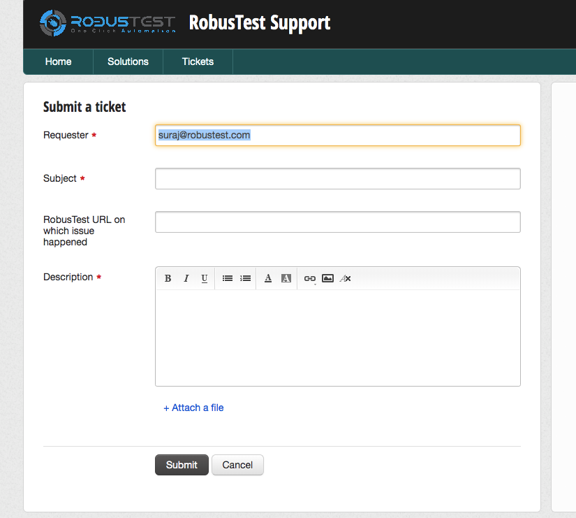

15. User Profile¶
On the top right corner of the RobusTest page, you see your RobusTest username being displayed.
On clicking on the username, a menu with the following options is displayed:
- Profile
- Help
- Support
- Logout
1. Profile
Clicking on ‘Profile’ opens the ‘User Selection Profile’ window.
On this window, the following information are displayed:
- Name: The username that was used at the time of creation of the profile is displayed here. This field is editable.
- Email: The email provided at the time of creation of the profile is displayed here. This value is not editable.
- Access Key: RobusTest provides a number of APIs that you can use to perform a wide variety of actions. For security reasons, only authorized users are permitted to execute these APIs.
For this, RobusTest provides each user an access key. This access key is a unique identifier associated with the user’s profile on RobusTest. You will need this access key to execute RobusTest APIs.
- Copy Access Key: This button copies the access key to the clipboard
- Hide/Show Access Key: This button hides or unhides the Access Key that is displayed on the profile
- Reset Access Key: Clicking on this button resets the Access Key. A new Access Key will now be generated for the user
2. Help
Clicking on ‘Help’ opens the RobusTest Product Documentation page on a new browser tab. The documentation will help you in understanding in detail how the RobusTest platform works.
3. Support
At RobusTest, we aim to provide you, the users of our platform, technical support of the highest qulaity.
When you have a query, you can reach out to us using the ‘Support’ option.
On clicking on ‘Support’, you will be re-directed to the third-party ticketing platform that we employ to handle all support requests.
On this page, you can provide an appropriate subject line and a detailed description of the issue you are facing or a requirement you would like to be met by the platform. You can also attach relevant screenshots or log files where necessary
Once a support ticket is logged, the RobusTest Support team will respond to your email based on agreed upon service guidelines.
4. Logout
You can log out of the RobusTest platform by clicking on the ‘Logout’ option